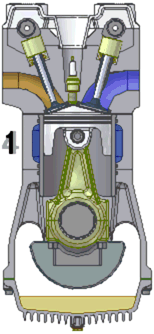
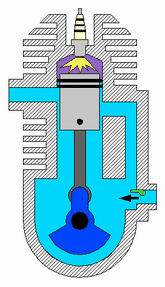
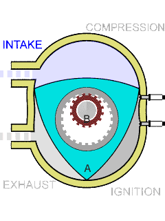
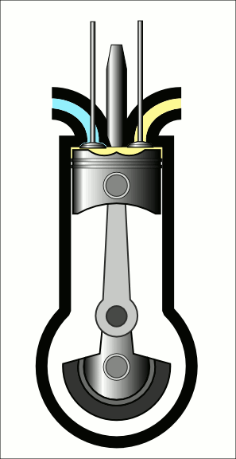
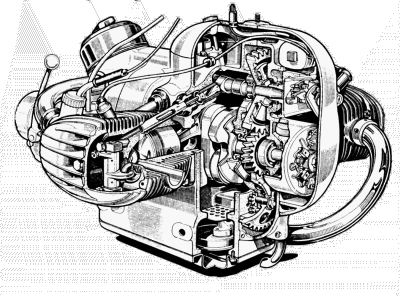
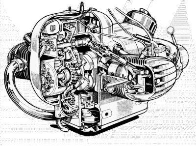

HOW AN ENGINE WORKS
"THE BASICS"
To start any engine, Two or Four stroke, you must have Three things.
One- A burnable mixture of something. It can be gasoline, starting fluid, carb cleaner, shoot, it could be spray deodorant! But it must be able to burn.
Two- It must be compressed, that is under compression by the piston.
Three- there must be a way to ignite the compressed mixture at the right time.
If all three things are present, the engine MUST run. It may not run long and it may not run good, but it will run. Always remember that! The reason I say that is because engines can do funny things.
Sometimes things that shouldn't work... work. Other times, things that should work... don't. We need to remember that there is a reason why it works and why it doesn't work. If you did it all right
then it MUST work! If it doesn't work...you did something wrong. When things don't work, remember these three things and go back and double check your work.
In an engine these things occur as part of a cycle. That cycle is basically this -
- SUCK
- SQUEEZE
- BURN
- BLOW
The fuel mixture must be brought into the cylinder -SUCK, compressed -SQUEEZE, ignited -BURN, and then expelled from the cylinder -BLOW. All reciprocating engines must go through these steps no matter what the design of the engine (two-stroke, four-stroke, whatever).
In a Four-Stroke engine the intake valve opens and the piston goes down, sucking the fuel mixture into the cylinder. The intake valve then closes as the piston comes back up squeezing the mixture. Spark now occurs and the burning gases expand, pushing the piston down with lots of power. As the piston comes up again, the exhaust valve opens and the burnt gases are blown out of the engine and the process starts over again.
Piston down-Suck ...Piston up-Squeeze ... Piston down-Burn ... Piston up-Blow.
Four-Strokes.

In a Two-Stroke engine the piston goes down, compressing the fuel mixture under the piston and blowing it into the cylinder. As this mixture blows in it also blows the burnt exhaust gases out. The fuel mixture is blown into the cylinder through passages ( Ports ) in the cylinder walls. The piston comes up, covering the ports in the cylinder walls and compressing or squeezing the mixture. This also creates a vacuum in the crankcase under the piston, sucking the fuel mixture into the crankcase. The spark then ignites the mixture and the burning gases push the piston down, starting everything again.
Piston down-Suck & Blow... Piston up-Squeeze & Burn
Two-Strokes.

The rotary engine was used on several makes of motorcycle. Suzuki, Hercules and Norton are the only manufacturers who made production Rotary Motorcycles. At least they are the only ones I know of. Not many were made and they all have been gone for many years.

Diesel engines operate just like four stroke engines. The only differences are these. Instead of a spark plug there is a fuel injector and there is very high compression, like about 18 to 1. The first stroke draws in only air. The second stroke compresses this air and just before top-dead-center of the compression stroke the fuel injector injects fuel. The compressed air is very hot and when the injector injects fuel it ignites and starts to burn. The burning fuel forces the piston down, third stroke, and on to the fourth, exhaust stroke. The process then starts anew.

Diesel engines are used currently (?) on only two production motorcycles that I am aware of. Kawasaki makes a KLR650-based diesel motorcycle for use with NATO and Royal Enfield made 325cc and 435cc single-cylinder diesel engine motorcycles. I have never seen one of these bikes up close. In fact, I am not even sure they are still in production so I would not worry too much about having to repair one.
That's all there is to it. There are other engine designs but they are not used much, if at all, in production motorcycles.
 |
 |
Copyright © 1999-2015 dansmc.com. All rights reserved.